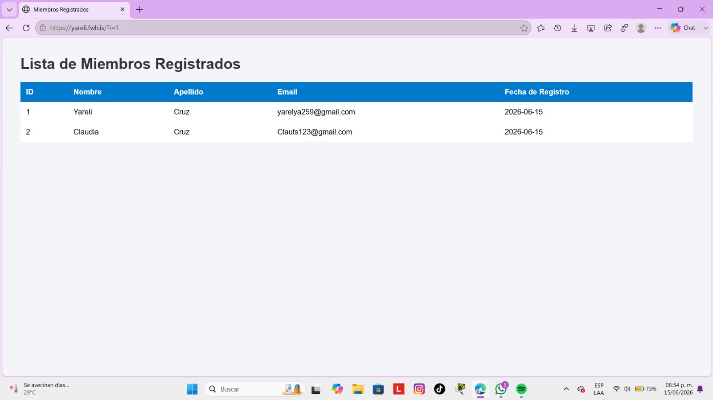

En esta práctica conecté la base de datos de Access con una página web utilizando PHP. Primero configuré una conexión ODBC para que Windows pudiera encontrar la base de datos. Después creé una página web que mostraba automáticamente la información guardada en la tabla de miembros. Cuando agregaba nuevos registros en Access, estos aparecían en la página web al actualizarla.